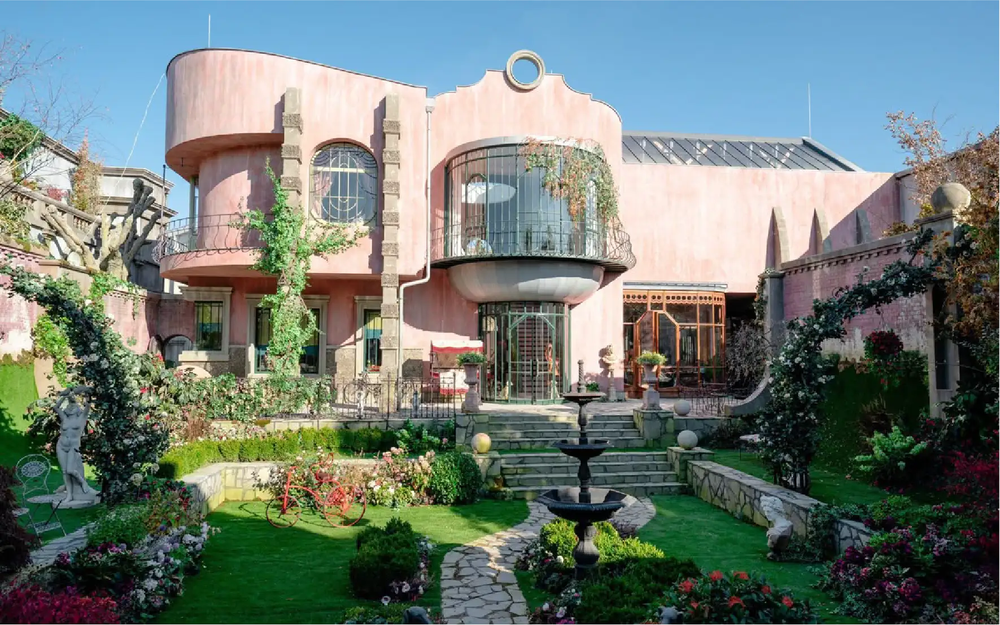
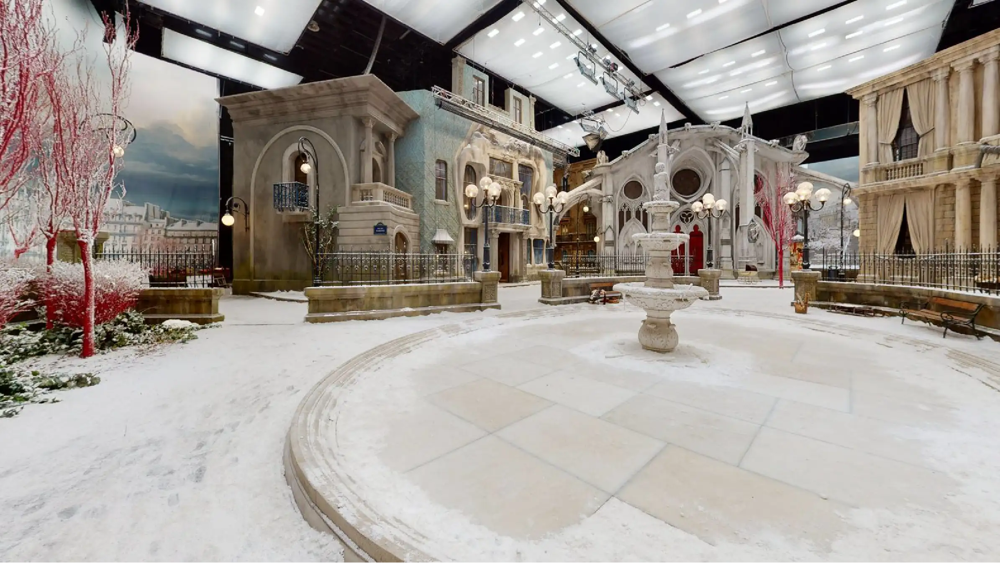
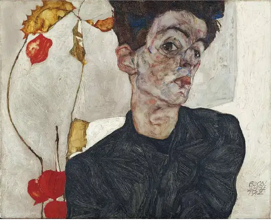
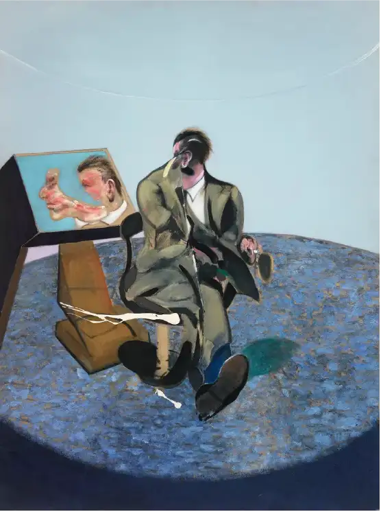
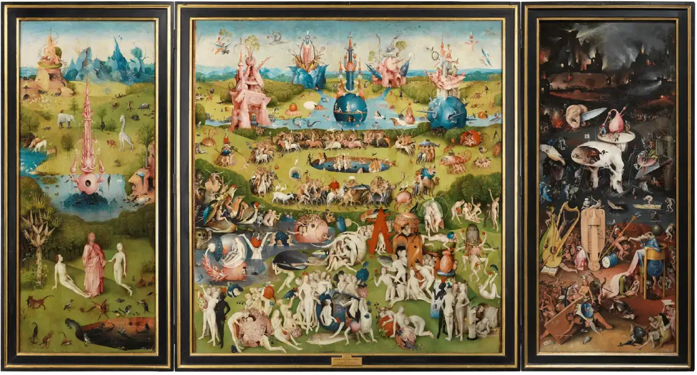
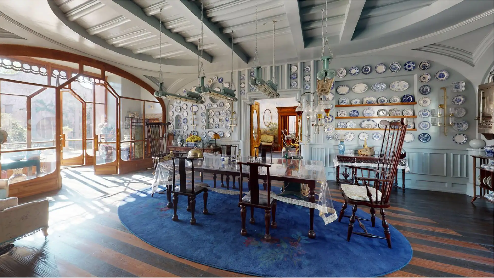

En Poor Things (2023), Yorgos Lanthimos transforma el espacio cinematográfico en una obra de arte total. Lejos de limitarse a recrear el siglo XIX, el director y su equipo construyen un universo que combina lo clásico, lo grotesco y lo futurista, reflejando la metamorfosis interior de su protagonista, Bella Baxter. Cada decorado —desde los laboratorios quirúrgicos hasta los paisajes imposibles de Lisboa, París o Alejandría— funciona como una extensión de su mente: exuberante, cambiante y profundamente simbólica.


El diseño de producción, a cargo de James Price y Shona Heath, es uno de los grandes logros del film. Ganadores del Oscar a Mejor Diseño de Producción, crearon escenarios donde lo físico y lo imaginario conviven con naturalidad. En los estudios Korda de Budapest levantaron estructuras gigantes, calles completas y fondos pintados a mano de más de 50 metros de largo, combinados con maquetas y proyecciones LED que aportan profundidad. Cada textura, cada objeto, parece respirar.



Lejos del realismo histórico, Poor Things propone un mundo orgánico y sensorial, donde la arquitectura se comporta como un cuerpo vivo. Las formas curvas, los materiales húmedos, los tonos brillantes y las referencias anatómicas evocan tanto la ciencia como el deseo.
Lanthimos y su equipo se inspiraron en artistas como Egon Schiele, Hieronymus Bosch y Francis Bacon, trasladando su expresividad pictórica a la tridimensionalidad del cine.

El resultado es un espacio que no solo se observa, sino que se siente. Una ciudad de ensueño que se deforma con la curiosidad de su protagonista, un laboratorio que palpita, un barco que flota entre lo real y lo simbólico. Poor Things demuestra que la escenografía no es un mero fondo, sino un lenguaje visual capaz de contar lo que las palabras no alcanzan: el proceso de creación, liberación y autodescubrimiento de un ser humano.